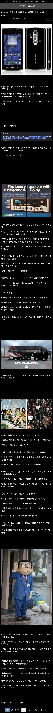

2탄내놔

2탄내놔
진핑이 같은 병크 터지면 좀 더 늦쳐질지도?
중국도 워낙 지금 숨기는 자료가 많아서 전문가들도 의견이 사방팔방으로 난장나있는데
지금 중국이 싼값에 넘기는 물건중에 지방정부발 덤핑하는 물자가 있다는거만큼은 공통된 의견이라.. 이 거대한 치킨게임에 이길 수 있냐 없냐에 갈리긴 할듯
중국의 가장 큰 문제는 평균 학업 성취도가 올라가 국민 수준이 올라가면 저 넓은 땅에서
일어나는 시위를 전부 막을 수 있나,
빈부 격차로부터 오는 국민들의 불만을 언제까지 잠재울 수 있을 것인가... 인데 예측이 어렵네
우리가 생각하는것보다 중국에 못배운 사람들 많아서 정부에서 50되면 그사람들 모두 죽인거 아니면?
그사람들 이용하면될껄? 개인적으로 제2의 문화 혁명이 일어날수도 있다고 믿어서
쇼츠 하나 뚝딱이겠는데 이걸 안 하네
어차피 이거퍼갈듯
일주일 안에 쇼츠 돌아다닐듯ㅋㅋㅋㅋ
ㄱㅊ 누가 긴빠이 해갈거임
그야... 이전까진 누가 이런 양질의 글을 인터넷에 안 풀었으니까
저런 글을 바탕으로 쇼츠 만드는 곳 많음
ㄹㅇ 이런 사람이 해서 돈벌어야 하는데 딸깍충들만
이래서 글안쓰게댐
이미 저 내용 유툽 존나 많음

일본놈들 진짜 머 납품할때도 짜증나던데 80년대 정착화된 프로세스 아직도 사용 중이라 아날로그인거 엄청많음
재미있네 ㅋ 더내놔!
좇본 특) 대가리 숙이다가 각만 보이면 갑질할려함
갑질할려다가 뿅망치(핵, 플라자합의) 맞고 쭈구리 됨 ㅋㅋㅋ
2편내놩
아 플라자합의의 배경이랑도 이어지는 구나
유통망 진입하는건 씹창난 인성이랑 별개로 시사점이 많네
기업운영도 그렇고 자본주의는 가능한 탐욕과 야성이 미덕이라
신의를 배반하는 이미지랑 환장의 시너지를 낸게 지극히 일본스럽네
하기사 안될거라 생각했으면 인성질 안했겠는데 되겠다 싶으니까 패악질 한거고
막상 실패해서 그냥 패악질한 회사 되어버린것 까지 일본스러움
본문의 주제가 일본기업의 흥망성쇠라서 그렇지
사실 어느나라건 크고작게 탐욕적이고 갑질하다 똥볼차는거야 뭐 병가지상사라서 오히려 대권에 근접해봤던 일본경제라서 반면교사등 여러시사점이 있네
나라가 음습함 그 자체
지금 한국이랑 똑같은거 못느끼나.. 반도체로 폭리 취하고 있는데
워낙 잘나가니 저랬나보네
걍 일본자체가 에헤헤하면서 뒤통수 칠 생각만 하려는 문화인가
와..우리나라 이야기인줄
일본 보면 선진국이 할수있는 병크 전부다 했는데
그럼에도 독일 일본 미국은 첫번째로 성장한 것때문에 지금까지 경제 대국으로 살고있는듯
한국이 약간 늦은 후발 주자에 운도 있어서 이정도 살고 있는데
제일 궁금한거는 중국 과연 중국이 수많은 병크를 이겨내고 과연 선진국이 될수 있을려나?